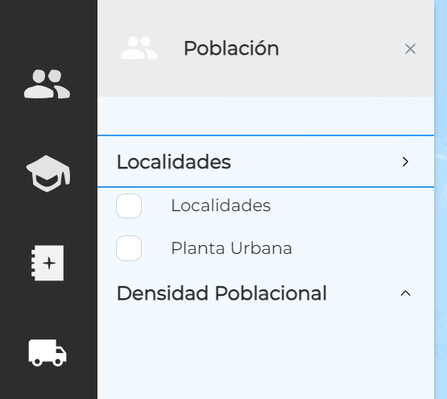

Barra lateral - Sidebar¶

A la izquierda de la pantalla se puede ver una barra lateral vertical que permite navegar entre categorías y subcategorías para activar o desactivar las capas predefinidas por el cliente desde Layers Manager y visualizarlas u ocultarlas.

Cada ícono representa una categoría distinta de capas, agrupadas por una temática en particular. Al hacer clic en una categoría, la barra se expandirá hacia la derecha y se abrirá el panel de capas, donde se podrán visualizar las subcategorías. Estas agrupan a las capas dentro de las categorías en torno a temáticas más específicas que las de las categorías o sub-temáticas.
Al hacer clic en una subcategoría, finalmente aparecerán las capas.
{kind=link}
Al cliquear en cada capa, esta se activará y podrá verse sobre el mapa. Al hacer esto, también se abrirá una tarjeta de capa a la derecha del panel de capas. Es probable que debamos hacer click en en el signo mayor, a la izquierda de la cruz para desplegarla.

En la parte inferior de la barra lateral, tenemos un icono con forma de engranaje.
Al apretarlo nos permite ver un enlace a una breve guia de las opciones de la pantalla
Con el botón lenguaje podremos elegir en que idioma deseamos utilizar el visor de Geoexpress